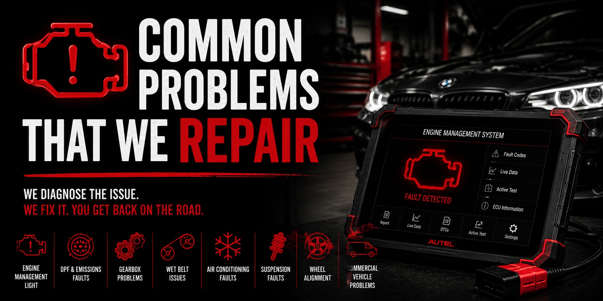
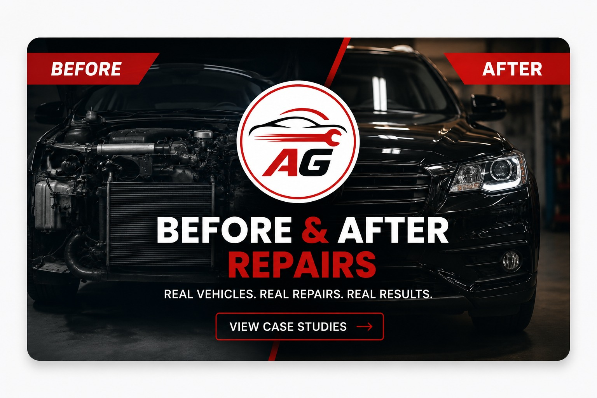

Tadley • Reading • Basingstoke • Bramley
Call 07920 778706 GoogleReviews
GoogleReviews
Specialist Vehicle Services
Trusted Vehicle Care With A Specialist Garage
DPF pressure gun cleaning, DPF deep clean, walnut blasting, automatic gearbox service, ECU diagnostic & coding, commercial vehicle services and wheel alignment — professional workshop support across Tadley, Reading, Basingstoke and Bramley.
Service Pages
Choose The Service You Need
Each service has its own fast SEO landing page with pricing where available, risk information and booking.

From £160
DPF Pressure Gun Cleaning
DPF Pressure Gun Cleaning is a specialist DPF cleaning service carried out with a pressurised cleaning gun system. This metho...

Carbon Removal
Walnut Blasting
Walnut blasting is a specialist carbon cleaning process designed to remove carbon build-up from intake-related areas. This he...

From £299
Automatic Gearbox Service
Automatic gearbox service is aimed at improving shift quality and supporting the long-term condition of the gearbox. We use a...

From £60
ECU Diagnostic & Coding
ECU Diagnostic & Coding is designed for electronic diagnostics, coding support, control module work and vehicle software-rela...

From £220
DPF Cleaning Service
DPF Cleaning Service is a targeted specialist cleaning process using dedicated equipment and products for selected DPF-related issu...

Specialist
Wet Belts
Wet belt diagnostics, oil pressure checks and replacement for affected engines.

Prices Listed
Wheel Alignment
Wheel alignment helps correct the angle of the wheels so the vehicle drives straighter, handles better and wears tyres more e...

VANS & FLEETS
Commercial Vehicle Services
Van servicing, diagnostics, brakes, suspension, DPF, MOT repairs and fleet maintenance.

MOT £19.99 Deal
MOT Testing & Repairs
MOT testing, pre-MOT checks and MOT failure repairs. Full Service customers get MOT for only £19.99.

Recovery
Recovery & Vehicle Transportation
Vehicle collection, recovery and transportation support for cars and light vehicles.
JUNE DEALS
Offers in June
June offers and deals, including MOT for only £19.99 when booked with a Gold Service.

Diagnostics
Common Vehicle Problems We Repair
Warning lights, DPF faults, limp mode, wet belt concerns, gearbox problems and more.

Real Repairs
Repair Case Studies
Real vehicles repaired and restored by AG Auto-Tech Tadley. See documented repairs, transformations and workshop results.
Why Choose Us
Why Choose AG Auto-Tech Tadley?
Transparent & Honest AdviceWe explain what we find, what needs attention and why — with clear recommendations before work begins.
Customer Care FirstWe look after our customers as carefully as we look after their vehicles, with respectful communication and practical support.
Accurate DiagnosticsOur process focuses on finding the real cause of faults before replacing unnecessary parts.
Specialist Repair FocusFrom DPF and wet belts to gearbox, coding, alignment and commercial vehicles, we invest in the right equipment and skills.
Specialists In Modern Engine ProblemsDPF cleaning, wet belt diagnostics, walnut blasting, automatic gearboxes, AdBlue, emissions and commercial vehicle faults.
Service Packages
Bronze, Silver, Gold & Platinum Services
Choose the right maintenance package for your vehicle. Clear options, professional checks and quality parts.
| Service Item | Bronze Service | Silver Service | Gold Service | Platinum Service |
|---|---|---|---|---|
| Engine Oil Change | ✓ | ✓ | ✓ | ✓ |
| Oil Filter Replacement | ✓ | ✓ | ✓ | ✓ |
| Vehicle Health Check | ✓ | ✓ | ✓ | ✓ |
| Tyre Condition Check | ✓ | ✓ | ✓ | ✓ |
| Brake Inspection | ✓ | ✓ | ✓ | ✓ |
| Fluid Level Check & Top-Up | ✓ | ✓ | ✓ | ✓ |
| Air Filter Replacement | ✓ | ✓ | ✓ | |
| Cabin/Pollen Filter Replacement | ✓ | ✓ | ✓ | |
| Battery Health Check | ✓ | ✓ | ✓ | |
| Fuel Filter Replacement* | ✓ | ✓ | ||
| Spark Plug Replacement** | ✓ | ✓ | ||
| Full Diagnostic Scan | ✓ | ✓ | ||
| Multi-Point Inspection | ✓ | ✓ | ||
| Brake Fluid Replacement | ✓ | |||
| Coolant Replacement | ✓ | |||
| Transmission Fluid Check | ✓ | |||
| Comprehensive Inspection | ✓ |
* Where applicable. ** Petrol vehicles only.
Areas We Cover
Local Service Pages
Choose a service and nearby town for a focused AG Auto-Tech page.
DPF Pressure Gun Cleaning
DPF Pressure Gun Cleaning TadleyDPF Pressure Gun Cleaning BasingstokeDPF Pressure Gun Cleaning ReadingDPF Pressure Gun Cleaning NewburyDPF Pressure Gun Cleaning HookDPF Pressure Gun Cleaning AldermastonDPF Pressure Gun Cleaning ThatchamDPF Pressure Gun Cleaning BracknellDPF Pressure Gun Cleaning Farnborough
DPF Diagnostics
DPF Cleaning Service
Walnut Blasting
Automatic Gearbox Service
Automatic Gearbox Service TadleyAutomatic Gearbox Service BasingstokeAutomatic Gearbox Service ReadingAutomatic Gearbox Service NewburyAutomatic Gearbox Service HookAutomatic Gearbox Service AldermastonAutomatic Gearbox Service ThatchamAutomatic Gearbox Service BracknellAutomatic Gearbox Service Farnborough
ECU Diagnostic & Coding
Wheel Alignment
Commercial Vehicle Services
Commercial Vehicle Services TadleyCommercial Vehicle Services BasingstokeCommercial Vehicle Services ReadingCommercial Vehicle Services NewburyCommercial Vehicle Services HookCommercial Vehicle Services AldermastonCommercial Vehicle Services ThatchamCommercial Vehicle Services BracknellCommercial Vehicle Services Farnborough
MOT Testing & Repairs
Wet Belt Specialist
Find Us
Ash Park Business Centre, Little London, Tadley RG26 5FL